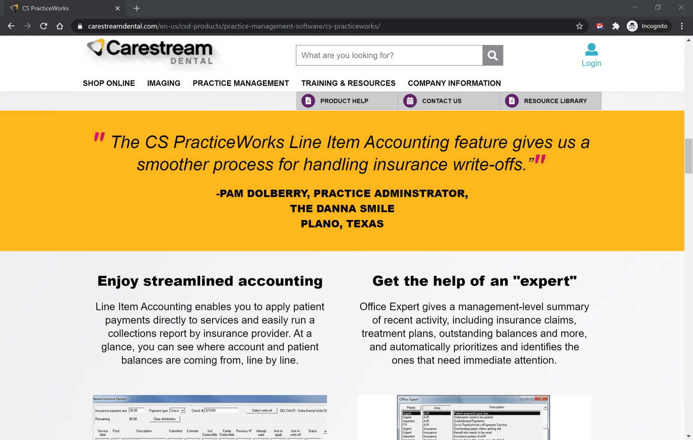
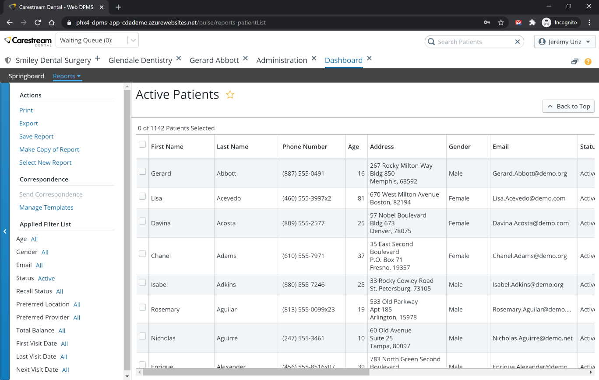
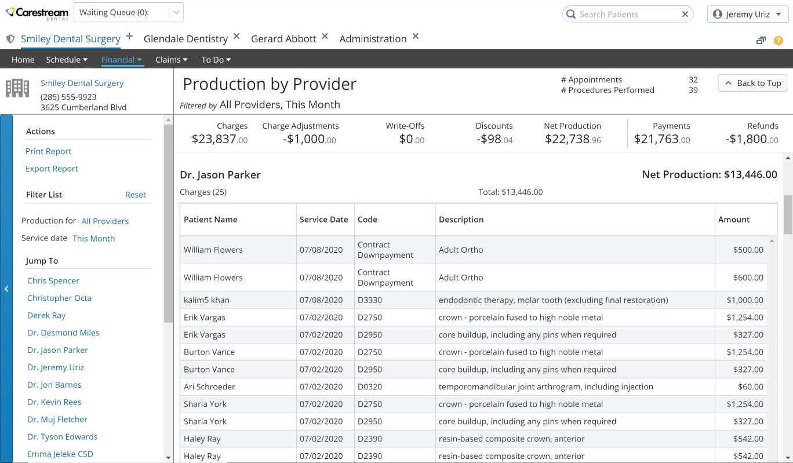

Line Item Accounting in PracticeWorks
Incorporating a new accounting system into an existing product poses many challenges. How to move from the old system to the new, payment mechanisms, and reporting just to name a few.
Through user user feedback and an iterative design process, I successfully guided the team to release a user friendly addition to PracticeWorks.

Due to the complexity and scope of the project, I created documentation covering the feature.
This documentation covered every aspect of the feature in an accessible format.
The work completed on this project was used as the foundation for implementing line item accounting into Carestream's cutting-edge SaaS practice management software, Care Management Platform (CMP).
Tools Used
Patient Report and Correspondence in Care Management Platform (SaaS)
Fulfilling a longstanding request from CMP's customer base, I was assigned the task of creating a patient reporting system for CMP. I immediately realized the potential for addressing the report request with another:
mass correspondence to patients.

After gathering requirements I designed a rough layout for the patient criteria and report results. Through iteration and validation, the final design and user stories were complete. The feature was released to unanimous
praise for its flexibility and functionality.
Tools Used
Production Report in Care Management Platform (SaaS)
Building on existing patterns within CMP I designed and wrote the user stories for the provider production report. A critical report for practice management, the report gives providers a view of procedures and the fees
charged.

Due to the complexity and scope of the project, I created documentation covering the feature.
This documentation covered every aspect of the feature in an accessible format.
Tools Used